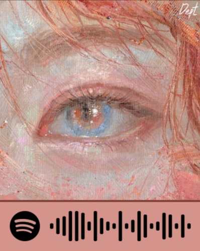
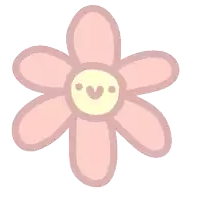
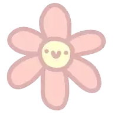
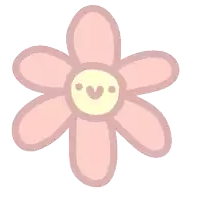
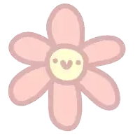

🎵 Song Story

 


Episode 1 - 15 Februari 2023👸🏻
Hai, nama aku Sely! Aku mau cerita sedikit tentang kisah ku yang agak aneh tapi menarik. Jadi, aku itu 14 tahun, kelas 8 SMP, dan jujur aja, aku anaknya pendiam banget di kelas. Pagi itu, pelajaran baru aja dimulai, guru ngasih tugas kelompok, dan langsung aja aku mikir, “Bersama siapa ya?”
Kelompok udah penuh semua, cuma ada empat orang yang nggak punya kelompok. Dan ternyata, aku jadi terpaksa masuk ke kelompok yang... yah, mereka beda banget sama aku. Tapi nggak apa-apa lah, akhirnya kita kerjain tugas bareng-bareng. Tugasnya selesai, dan hasilnya? Lumayan banget, 98% memuaskan. Ya, nggak heran sih, kan aku yang kerjain hampir semuanya 😆.
Yang bikin makin menarik, tiba-tiba ada pesan masuk di handphone aku. Itu dari si Muffin. Sebenarnya, aku nggak terlalu kenal dia, tapi ya udah deh, kita ngobrol soal tugas. Eh, lama-lama, dia mulai nanya-nanya soal kehidupan pribadi aku. “Kamu udah punya pacar?” Tanya Muffin. Aku jawab dengan santai, “Gak, aku anaknya pendiam, gak pernah gaul.”
Setelah itu, obrolannya jadi makin aneh. “Kamu tinggal dimana?” “Kamu wibu ya?” Gila, pertanyaan dia makin dalam aja kayak lagi nyelam sampe dasar laut! Tapi aku jawab aja, santai, “Gak pernah pacaran, nggak suka yang ribet.”
Hari-hari pun berlalu, dan tugas kita akhirnya dinilai. Nilainya 98%! Seneng sih, tapi ada yang lebih aneh lagi. Muffin kayaknya mulai tertarik sama aku. Tapi aku bingung, soalnya dia udah punya pacar, kan? Toh, aku juga nggak terlalu mikirin itu, karena dia kayaknya emang gak serius.
Aku mulai merasa cemburu dikit, ya nggak tahu kenapa. Ceweknya si Muffin itu cantik sih, tapi kok agak centil gitu ya? Aku sih nggak suka banget sama yang gitu-gitu. Aku malah ngerasa insecure, karena fisikku nggak se-good looking mereka.
Gue juga suka pakai masker, bukan karena aku malu, tapi lebih ke nggak pengen temen-temen gue ngejauh karena penampilan gue. Padahal, gue mikir, mungkin mereka juga nggak peduli sama itu. Tapi gue juga merasa agak aneh deh kalau lagi ketemu mereka. Malah gue jadi yang ngejauh sendiri. Ya begitulah hidupku, kawan.
Di sisi lain, Muffin yang kayaknya mulai naksir, mulai ngelakuin hal-hal aneh kayak tatap-tatap mata terus. Duh, aku bingung banget, apa sih maksudnya? Kok bisa gitu, dia kayaknya nunggu aku buat ngode balik. Cuma ya, aku juga gak paham, jadi ya kebingunganku berlanjut.
Pernah beberapa kali, Muffin ngelihatin aku di jalan, di kelas waktu praktikum, bahkan pas pelajaran PJOK! Sampai ada satu kejadian lucu banget, pas gue lagi ngaca di depan kelas, eh dia lagi ngelihatin gue. Apaan sih?! Aku salting parah, gak tahu harus ngapain, sampe bingung, kenapa sih dia sering banget ngelakuin itu?
Gue pikir, "Kenapa ya dia suka ngeliatin aku gitu?" Tapi, setelah beberapa kali ketemu di jalan, aku mulai berpikir, mungkin Muffin emang ada rasa, atau mungkin ini cuma gue yang overthinking.
— Tamat untuk Episode 1. Tapi siapa tau, ada episode baru yang lebih seru, kan? —
Episode 2 - 27 Januari 2024
Hai, sorry banget udah lama gak cerita. Banyak banget yang terjadi belakangan ini, dan aku nggak bisa fokus ke cerita ini. Tapi sekarang aku kembali, let's go! 🕺
Pada tanggal yang sama, 27 Januari, dunia aku bener-bener berubah. Hari itu, aku kehilangan ayahku, dan anehnya, itu juga bertepatan dengan ulang tahun Muffin. Dunia aku lagi hancur, dan aku gak tahu harus ngapain. Tapi meskipun dalam kesedihan, aku coba untuk bangkit lagi. Teman-teman di sekolah banyak yang ngedukung aku, dan itu bener-bener bikin aku kuat.
Jadi, Muffin juga mulai ngedukung aku lewat sosmed. Dia nggak bilang langsung, tapi aku bisa ngerasa dia peduli. Cuma, gue bingung kenapa dia suka banget puter lagu "Avenged Sevenfold" terus menerus. Itu kan lagu tentang kematian? Aneh banget deh.
Habis itu, aku lihat Muffin pergi ke Borobudur, dan ternyata dia nongkrong sama cewek lain. Gue bingung banget, tapi ya udah, gue cuma bisa liat dari jauh. Kenapa sih dia tiba-tiba galau gitu? Aku jadi makin bingung deh dengan semua ini.
— Tamat untuk Episode 2. Siapa yang tahu apa yang bakal terjadi selanjutnya? —
💌 Sekian cerita ngawurku hari ini. Semoga menghibur ya guys! Jangan lupa follow IG-ku @offllyy_ buat liat keseharianku yang absurd ini. Bye bye!
